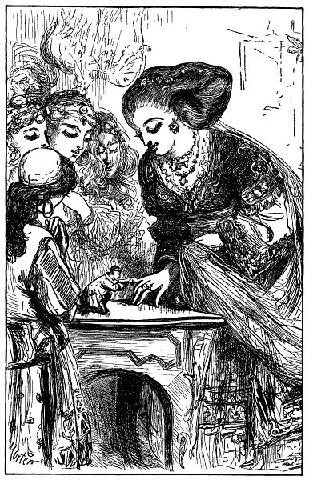
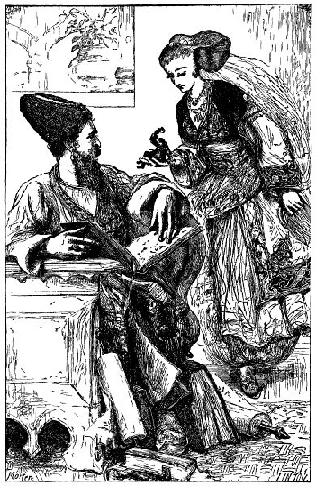
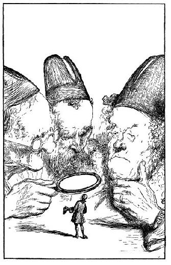

Tác giả được lệnh phải vào triều đình - hoàng hậu mua tác giả của ông chủ trại - Hoàng hậu giới thiệu tác cả với đức vua - Bàn luận với những nhà bác học của hoàng thượng - Sửa soạn một căn phòng cho tác giả - Tác giả trở thành thân cận của hoàng hậu và bảo vệ danh dự cho tổ quốc - Xung đột với gã lùn của hoàng hậu.
Công việc vất vả và mệt nhọc làm cho sức khỏe tôi chỉ trong vài tuần đã giảm sút hẳn. Càng thu được nhiều tiền ông chủ tôi càng muốn có nhiều hơn nữa. Tôi ăn không còn biết ngon, thân gầy như que củi. Ông chủ nhận thấy điều đó, ông nghĩ rằng tôi sắp chết nên quyết định khai thác đến mức tối đa những ngày cuối cùng của tôi. Trong khi ông nghiền ngẫm và thực hiện ý đồ ấy thì ông sardral, tức ông trưởng tòa từ triều đình tới ra lệnh cho ông chủ, mang ngay tức khắc về triều đình để giải trí cho hoàng hậu và đoàn nữ tùy tùng. Vài ba bà đã đến xem tôi và kể lắm chuyện ly kỳ về hình dáng tư cách và tính nết hiền hậu của tôi. Thấy dáng điệu cử chỉ của tôi, hoàng hậu và đoàn tùy tùng rất vui thích. Tôi quỳ xuống và vinh dự được hôn chân hoàng hậu nhưng bà hoàng hậu dễ thương đã đặt tôi lên bàn, rồi chìa ngón tay út ra, tôi dang hai tay ôm lấy ngón tay hoàng hậu mà hôn một cách hết sức trang trọng. Bà đặt những câu hỏi chung chung về xứ sở của tôi, về các cuộc du lịch. Tôi đáp lại hết sức rõ ràng và ngắn gọn. Bà hỏi ông chủ tôi có bằng lòng bán tôi với một giá cao không. Ông ta tính tôi chỉ còn sống được một tháng nữa nên bằng lòng bán ngay, lão đòi một nghìn đồng tiền vàng và tiền được trao ngay, mỗi đồng to bằng độ tám trăm đồng tiền Bồ Đào Nha, cứ theo tỉ lệ tương ứng giữa các vật ở nước này và ở nước Anh và theo giá trị vàng ở đây, thì số tiền ấy bằng đúng một nghìn bảng Anh. Tôi thưa với hoàng hậu rằng bây giờ tôi đã là chư hầu của bà, tôi xin bà ban ân huệ thu nhận cô bé Glumdalclitch - người vẫn chăm nom săn sóc tôi với một tấm lòng hiền dịu, được hầu hạ bà và tiếp tục làm cô vú nuôi. Hoàng hậu chấp nhận ngay đề nghị của tôi và ông chủ ấy cũng rất sung sướng được thấy con gái vào sống nơi cung đình. Cô bé không giấu nối sự hân hoan của mình. Ông chủ của tôi ra về, chào mọi người và bảo rằng ông ta đã chọn cho tôi một nơi tốt đẹp. Tôi chỉ khẽ gật đầu chào ông theo phép lịch sự.

Hoàng hậu nhận thấy vẻ lạnh nhạt của tôi nên khi ông chủ đi rồi, bà hỏi tôi nguyên nhân tại sao. Tôi liền thưa rằng tôi chẳng mang ân huệ gì đối với ông ta, ngoài cái ân huệ là không bị ông ta dẫm bẹp ở ngoài đồng. Vả lại, công ơn ấy đã được đền bù quá đầy đủ bằng số tiền ông thu được trong thời gian tôi biểu diễn khắp nửa xứ sở và bằng số tiền ông vừa bán tôi. Cuộc đời mà tôi vừa trải qua quá nặng nhọc, sự nặng nhọc ấy có thể giết chết một con vật khỏe gấp mười tôi, sức khỏe tôi sút hẳn đi vì những trò biểu diễn liên miên suốt ngày, và nếu ông ta không nghĩ rằng tôi sắp sửa chết đến nơi thì ông đã không bán rẻ đến thế. Bây giờ được sống với sự che chở của một bà hoàng vĩ đại và đức hạnh, niềm tự hào của vũ trụ, được cả thế giới mến yêu, niềm vui sướng của mọi thần dân, chim phượng hoàng của sự sáng tạo, tôi không còn sợ bị đọa đày nữa, tôi không phải lo sợ như khi ở với ông chủ cũ nữa, chỉ cần nhờ ảnh hưởng sự có mặt của hoàng hậu là tôi như đã sống lại rồi.
Đó là tôi tóm tắt bài diễn văn tôi đã đọc ngắc nga ngắc ngứ và đầy những tiếng dùng sai. Đoạn cuối được soạn theo lối văn phong đặc biệt của dân tộc xứ này mà cô giáo Glumdalclitch đã dạy tôi lúc đưa tôi về triều đình. Hoàng hậu sẵn lòng độ lượng tha thứ cho tất cả nhưng thiếu sót trong bài diễn văn nhưng tỏ vẻ ngạc nhiên thấy một con vật bé tí teo như thế lại tinh khôn và có lương tri như thế. Bà cầm lấy tôi trong hai tay đưa về cung điện nhà vua, vua lúc ấy đang ở phòng riêng. Đức vua có dáng nghiêm trang và khắc khổ. Thoạt tiên, ngài không nhìn tôi mà chỉ lạnh lùng hỏi hoàng hậu thích con Splacnuck từ bao giờ. Hoàng hậu vốn người rất ý nhị và vui tính, khẽ đặt tôi đứng trên bàn giấy và bảo tôi giải thích cho đức vua biết tôi là ai, tôi đáp mấy tiếng gọn lỏn. Cô bé Glumdalclitch vẫn chờ ở ngoài cửa phòng, cô không thể dời xa tôi được lâu hơn nữa nên người ta đưa cô vào và xác minh những điều đã xảy ra từ khi tôi đến gia đình cô.

Đức vua là người thông thái hơn bất cứ ai ở nước ngài, ngài là chuyên gia triết học và nhất là toán học. Song, khi ngài quan sát hình thù tôi và thấy tôi đi lại ngài cứ nghĩ tôi là một cái máy đồng hồ (một nghề hoàn hảo ở xứ này) do một nhà nghệ sĩ tài hoa sáng chế. Nhưng khi nghe tôi nói từng tiếng rõ ràng và mạch lạc, ngài không giấu nổi vẻ nhạc nhiên. Ngài không tin những điều tôi kể việc đã đến xứ sở của ngài như thế nào, ngài cho đó là một câu chuyện do hai cha còn ông chủ tự nghĩ ra rồi dạy tôi nói vài ba tiếng để bán được giá đắt. Xuất phát từ ý nghĩ ấy, ngài đặt mấy câu hỏi nữa, tôi trả lời đầu vào đấy, có điều giọng nói còn lơ lớ như giọng của người nước ngoài, và còn có những lỗi về ngôn ngữ và cách nói quê mùa mà tôi đã học được ở nhà ông chủ trại, nó không văn vẻ như cách nói nơi cung đình.

Nhà vua cho đi mời ba nhà bác học nổi tiếng đang trực trong tuần lễ này theo tục lệ của xứ sở. Sau khi xem xét tôi từng li từng tí, ba nhà bác học có ba ý kiến khác nhau. Nhưng họ đồng tình cho rằng tôi không thể sinh ra theo những quy luật bình thường của tự nhiên, bởi vì tôi không thể chạy nhanh, cũng như không thể leo cây hay đào hố dưới đất để tự bảo vệ mình. Sau khi xem xét kỹ lưỡng hai hàm răng tôi họ kết luận tôi thuộc giống ăn thịt. Nhưng hầu hết giống vật bốn chân đều khỏe hơn tôi, loài chuột hay bất kỳ loài gì khác cũng đều lanh lẹn hơn, cho nên họ không hình dung nổi bằng cách nào tôi có thế kiếm ăn được, nếu không phải là tôi ăn ốc sên hay sâu bọ. Nhưng bằng nhiều lập luận, họ chứng minh là điều này không thể xảy ra. Một trong những nhà bác học ấy cho rằng tôi là một cái quái thai hay một con chim đẻ non, nhưng ý kiến này bị hai nhà bác học kia bác bỏ ngay, họ nhận xét chân tay tôi nhỏ nhắn nhưng hoàn thiện vì tôi đã sống được lâu năm - điều này là dĩ nhiên, theo cách quan sát từng sợi râu của tôi qua ống kính phóng đại. Họ không muốn công nhận tôi là một thằng lùn bởi vì tôi bé quá sức. Gã lùn của hoàng hậu - người nhỏ bé nhất lúc này - cao gần ba mươi foot. Bàn luận hồi lâu họ nhất trí kết luận rằng tôi là một relplum scalcath, dịch từng chữ một nghĩa là lusus naturae, kết luận này rất phù hợp với triết học hiện đại ở châu Âu. Theo đó những giáo sư của thứ triết học này coi khinh cái thói lọc lừa cũ rích, (những lý do thần bí) mà những món đó theo học thuyết Aristotles[1] thường viện ra để giấu sự dốt nát của mình. Họ phát minh ra cách giải quyết là diệu ấy cho tất cả mọi khó khăn trên con dường tiến bộ của khoa học loài người.
Nghe sự phán quyết cuối cùng ấy, tôi xin phép được nói một đôi lời. Tôi khẳng định với đức vua rằng, trước đây, tôi ở một xứ sở mà dân cư cả nam lẫn nữ, có đến hàng triệu người, cũng bé nhỏ như tôi. Cỏ cây, súc vật, nhà cửa cũng theo tỉ lệ tương ứng. Bởi vậy, tôi đủ sức tự bảo vệ mình và kiếm ăn: chẳng khác gì các thần dân của ngài ở đây. Tôi nghĩ lời nói của tôi sẽ sổ toẹt mọi lập luận của các nhà bác học nhưng, họ chỉ đáp lại bằng một nụ cười khinh bỉ, họ cho rằng ông chủ trại của tôi đã khéo dạy tôi cách đối đáp.